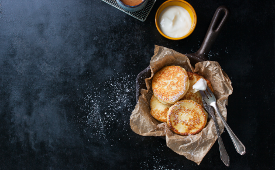

Творожные сырники
с бананом и шоколадом
Необычный вариант десерта, который особенно
оценят сладкоежки — сырники с бананом и
шоколадом. Растаявший шоколад внутри и румянная корочка — это невероятно вкусно,
а также очень быстро в приготовлении!